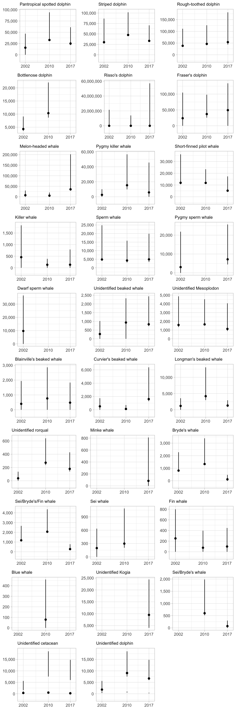
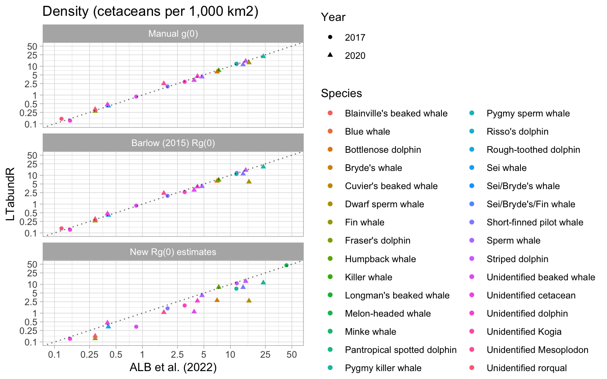
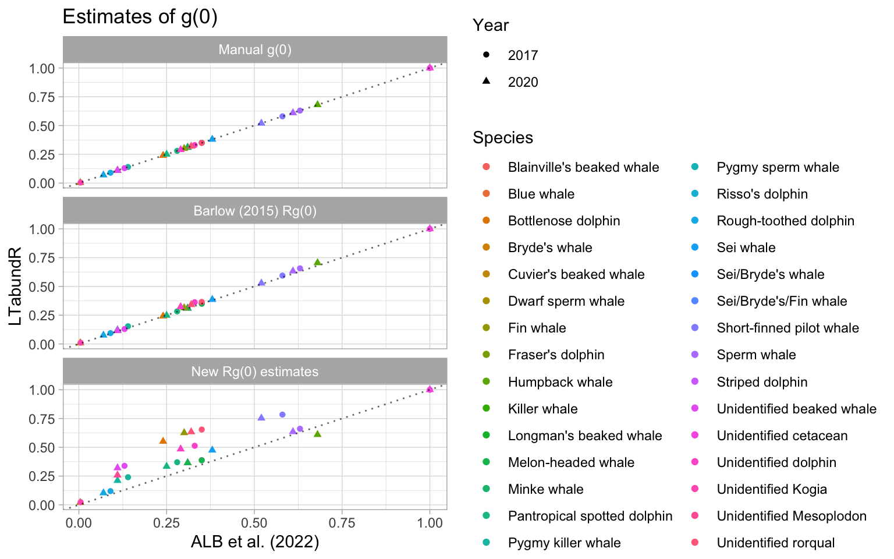

13 WHICEAS
Here we demonstrate code that reproduces the Bradford et al. (2022) WHICEAS report (In press) within the new LTabundR framework. This study estimates cetacean abundance for Hawaiian WHICEAS study area for 2017 and 2020. Here we use survey data from 1986 to 2020 to estimate Relative g(0) and detection functions. Currently, coefficients of variation (CV) of density and abundance are estimated using only 100 bootstrap iterations (the publication uses 1,000) to reduce processing time.
Data processing
Settings
Survey-wide settings
data(species_codes)
data(ships)
data(group_size_coefficients)
survey <- load_survey_settings(
out_handling = 'remove',
max_row_interval = Inf,
segment_method = "equallength",
segment_target_km = 150,
segment_max_interval = 24,
segment_remainder_handling = c("segment"),
ship_list = ships,
species_codes = species_codes,
group_size_coefficients = group_size_coefficients,
smear_angles = FALSE
)Cohort-specific settings
Cohort 1: all species
all_species <- load_cohort_settings(
id = "all", # *
species = NULL,
strata = c('WHICEAS', 'HI_EEZ', 'OtherCNP'), # *
probable_species = FALSE,
sighting_method = 0,
cue_range = 0:7,
school_size_range = c(0, 10000),
school_size_calibrate = TRUE,
calibration_floor = 0,
use_low_if_na = TRUE,
io_sightings = 0,
geometric_mean_group = TRUE,
truncation_km = 7.5, # *
beaufort_range = 0:6,
abeam_sightings = TRUE,
strata_overlap_handling = c("smallest"),
distance_types = c('S','F','N'),
distance_modes = c('P','C'),
distance_on_off = TRUE
)Rg0
We can use the built-in dataset, data(g0_results), which has Beaufort-specific Relative g(0) estimates for most species based on 1986-2020 surveys.
To explore the effects of LTabundR’s g(0) estimation routines on our abundance estimates, we will be running the analyses below with three different g(0) scenarios. In scenario 1, we will manually specify the weighted g(0) and its CV for each species in 2020; these results should be nearly exact replicates of those from Bradford et al. (2021), and we can be sure that any discrepancy between the two sets of results are not attributable the g(0) aspect of the analysis. Second, we will allow LTabundR to calculate the weighted g(0) and its CV using the same Relative g(0) values that were used in Bradford et al. (2021) (i.e., the results of Barlow (2015), which used surveys from 1986 to 2010 and is provided in LTabundR as a built-in dataset), such that any difference between scenarios 1 and 2 are likely due to the weighted g(0) subroutines. Finally, in scenario 3, we will use the Relative g(0) esitmates produced by LTabundR using a more extensive survey dataset (1986-2020).
For each g(0) scenario, our Rg0 object and results_path will differ:
# Set Rg0 source and results path
if(g0_scenario == 1){ # Using manually-specified g0 and its CV
Rg0 <- NULL
results_path <- 'whiceas/lta_manual/'
}
if(g0_scenario == 2){ # Using Rg0 estimates from Barlow 2015
data(barlow_2015)
Rg0 <- barlow_2015
results_path <- 'whiceas/lta_barlow/'
}
if(g0_scenario == 3){ # New LTabundR estimates of Rg0
data(g0_results)
Rg0 <- g0_results
results_path <- 'whiceas/lta/'
}Density & abundance
First we can define common values that will be constant across all estimates we produce:
bootstraps <- 20
years <- 1986:2020
fit_regions <- NULL
fit_not_regions <- NULL
toplot = TRUE
verbose = TRUE
df_settings <-
list(covariates = c('bft','lnsstot','cruise','year','ship','species'),
covariates_factor = c(FALSE, FALSE, TRUE, TRUE, TRUE, TRUE),
covariates_levels = 2,
covariates_n_per_level = 10,
simplify_cue = TRUE,
simplify_bino = TRUE,
detection_function_base = 'hn',
base_model = '~1',
delta_aic = 2)For most species, we want to estimate density/abundance for the same set of year-region scenarios. To reduce code redundancy, as well as the risk of typing errors (and our work!), we can use the LTabundR function lta_estimates() to economize how we prepare our estimates input.
For most species, these are the year-region scenarios for which we want estimates:
The lta_estimates() function will generate a custom function that makes it easy to create a set of estimates sub-lists for each species of interest:
That result, estimator, is actually a function. Here’s an example of how this function will work, using the first species pool as an example:
estimates <-
c(estimator(spp = '013', title = "Striped dolphin"),
estimator(spp = '026', title = "Fraser's dolphin", alt_g0_spp = '013'),
estimator(spp = '031', title = "Melon-headed whale", alt_g0_spp = '013'))
estimates
## [[1]]
## [[1]]$years
## [1] 2017
##
## [[1]]$regions
## [1] "WHICEAS"
##
## [[1]]$spp
## [1] "013"
##
## [[1]]$title
## [1] "Striped dolphin"
##
##
## [[2]]
## [[2]]$years
## [1] 2020
##
## [[2]]$regions
## [1] "WHICEAS"
##
## [[2]]$spp
## [1] "013"
##
## [[2]]$title
## [1] "Striped dolphin"
##
##
## [[3]]
## [[3]]$years
## [1] 2017
##
## [[3]]$regions
## [1] "WHICEAS"
##
## [[3]]$spp
## [1] "026"
##
## [[3]]$title
## [1] "Fraser's dolphin"
##
## [[3]]$alt_g0_spp
## [1] "013"
##
##
## [[4]]
## [[4]]$years
## [1] 2020
##
## [[4]]$regions
## [1] "WHICEAS"
##
## [[4]]$spp
## [1] "026"
##
## [[4]]$title
## [1] "Fraser's dolphin"
##
## [[4]]$alt_g0_spp
## [1] "013"
##
##
## [[5]]
## [[5]]$years
## [1] 2017
##
## [[5]]$regions
## [1] "WHICEAS"
##
## [[5]]$spp
## [1] "031"
##
## [[5]]$title
## [1] "Melon-headed whale"
##
## [[5]]$alt_g0_spp
## [1] "013"
##
##
## [[6]]
## [[6]]$years
## [1] 2020
##
## [[6]]$regions
## [1] "WHICEAS"
##
## [[6]]$spp
## [1] "031"
##
## [[6]]$title
## [1] "Melon-headed whale"
##
## [[6]]$alt_g0_spp
## [1] "013"The output of estimator() is a list of sub-lists specifying a set of density/abundance estimates you want to produce based on the detection function for a single species pool.
Here is the full code for producing those estimates for all species from Bradford et al. (2021):
Multi-species pool 1
# Striped dolphin (013), Fraser's dolphin (026), Melon-headed whale (031)
if(TRUE){ # toggle
# Detection function specifications
fit_filters <-
list(spp = c('013', '026', '031'),
pool = 'Multi-species pool 1',
cohort = 'all',
truncation_distance = 5,
other_species = 'remove',
years = years,
regions = fit_regions,
not_regions = fit_not_regions)
# Density / abundance estimation plan
estimates <-
c(estimator(spp = '013', title = "Striped dolphin"),
estimator(spp = '026', title = "Fraser's dolphin", alt_g0_spp = '013'),
estimator(spp = '031', title = "Melon-headed whale", alt_g0_spp = '013'))
estimates
# Manually specify g0 and its CV -- only for g0_scenario 1
# Two specifications per species, one for 2017 and one for 2020
if(g0_scenario==1){
# Striped
estimates[[1]]$g0 <- 0.35; estimates[[1]]$g0_cv <- 0.19
estimates[[2]]$g0 <- 0.31; estimates[[2]]$g0_cv <- 0.22
# Fraser's
estimates[[3]]$g0 <- 0.35; estimates[[3]]$g0_cv <- 0.10
estimates[[4]]$g0 <- 0.31; estimates[[4]]$g0_cv <- 0.22
# Melon-headed
estimates[[5]]$g0 <- 0.35; estimates[[5]]$g0_cv <- 0.19
estimates[[6]]$g0 <- 0.31; estimates[[6]]$g0_cv <- 0.22
}
# Run analysis
results <- lta(cruz, Rg0, fit_filters, df_settings, estimates,
bootstraps = bootstraps,
toplot=toplot, verbose=verbose)
# Save result
(results_file <- paste0(results_path, fit_filters$pool, '.RData'))
saveRDS(results, file=results_file)
}Multi-species pool 2
# Rough-toothed dolphin (15), Common bottlenose dolphin (18), Risso's (21),
# Pygmy killer whale (32)
# Notes
# Bottlenose abundance is estimated in a separate cohort, but included here for DF fitting
if(TRUE){ # toggle
# Detection function specifications
fit_filters <-
list(spp = c('015', '018', '021', '032'),
pool = 'Multi-species pool 2',
cohort = 'all',
truncation_distance = 5,
years = years,
regions = fit_regions,
not_regions = fit_not_regions)
# Density / abundance estimation plan
estimates <-
c(estimator(spp = '015', title = "Rough-toothed dolphin"),
estimator(spp = '021', title = "Risso's dolphin"),
estimator(spp = '032', title = "Pygmy killer whale"))
if(g0_scenario==1){
# Rough-toothed
estimates[[1]]$g0 <- 0.09; estimates[[1]]$g0_cv <- 0.45
estimates[[2]]$g0 <- 0.07; estimates[[2]]$g0_cv <- 0.51
# Risso's
estimates[[3]]$g0 <- 0.57; estimates[[3]]$g0_cv <- 0.18
estimates[[4]]$g0 <- 0.52; estimates[[4]]$g0_cv <- 021
# Pygmy killer
estimates[[5]]$g0 <- 0.14; estimates[[5]]$g0_cv <- 0.25
estimates[[6]]$g0 <- 0.11; estimates[[6]]$g0_cv <- 0.28
}
# Run analysis
results <- lta(cruz, Rg0, fit_filters, df_settings, estimates,
use_g0 = TRUE,
bootstraps = bootstraps,
toplot=toplot, verbose=verbose)
# Save result
(results_file <- paste0(results_path, fit_filters$pool, '.RData'))
saveRDS(results, file=results_file)
}Multi-species pool 3
# Short-finned pilot whale (036), Longman's beaked whale (065)
# No Rg(0) available for Longman's -- will use SF pilot whale instead to estimate its weighted g0
if(TRUE){ # toggle
# Detection function specifications
fit_filters <-
list(spp = c('036', '065'),
pool = 'Multi-species pool 3',
cohort = 'all',
truncation_distance = 5,
years = years,
regions = fit_regions,
not_regions = fit_not_regions)
# Density / abundance estimation plan
estimates <-
c(estimator(spp = '036', title = "Short-finned pilot whale"),
estimator(spp = '065', title = "Longman's beaked whale",
alt_g0_spp = '036'))
if(g0_scenario==1){
# Short-finned
estimates[[1]]$g0 <- 0.58; estimates[[1]]$g0_cv <- 0.15
estimates[[2]]$g0 <- 0.52; estimates[[2]]$g0_cv <- 0.19
# Longman's
estimates[[3]]$g0 <- 0.58; estimates[[3]]$g0_cv <- 0.15
estimates[[4]]$g0 <- 0.52; estimates[[4]]$g0_cv <- 0.19
}
# Run analysis
results <- lta(cruz, Rg0, fit_filters, df_settings, estimates,
use_g0 = TRUE,
bootstraps = bootstraps,
toplot=toplot, verbose=verbose)
# Save result
(results_file <- paste0(results_path, fit_filters$pool, '.RData'))
saveRDS(results, file=results_file)
}Multi-species pool 4
# Killer whale (37), sperm whale (46)
if(TRUE){ # toggle
# Detection function specifications
fit_filters <-
list(spp = c('037', '046'),
pool = 'Multi-species pool 4',
cohort = 'all',
truncation_distance = 5.5,
other_species = 'remove',
years = years,
regions = fit_regions,
not_regions = fit_not_regions)
# Density / abundance estimation plan
estimates <-
c(estimator(spp = '037', title = "Killer whale"),
estimator(spp = '046', title = "Sperm whale"))
if(g0_scenario==1){
# Killer (no sightings in ALB et al 2021)
estimates[[1]]$g0 <- 1; estimates[[1]]$g0_cv <- 0
estimates[[2]]$g0 <- 1; estimates[[2]]$g0_cv <- 0
# Sperm
estimates[[3]]$g0 <- 0.63; estimates[[3]]$g0_cv <- 0.34
estimates[[4]]$g0 <- 0.61; estimates[[4]]$g0_cv <- 0.37
}
# Run analysis
results <- lta(cruz, Rg0, fit_filters, df_settings, estimates,
use_g0 = TRUE,
bootstraps = bootstraps,
toplot=toplot, verbose=verbose)
# Save result
(results_file <- paste0(results_path, fit_filters$pool, '.RData'))
saveRDS(results, file=results_file)
}Multi-species pool 5
# Pygmy sperm whale (47), dwarf sperm whale (48), UNID Kogia (80),
# Blainville's beaked whale (59), Cuvier's beaked whale (61),
# UNID Mesoplodon (51), UNID beaked whale (49), Minke whale (71)
if(TRUE){ # toggle
# Detection function specifications
fit_filters <-
list(spp = c('047', '048', '080', '059', '061', '051', '049', '071'),
pool = 'Multi-species pool 5',
cohort = 'all',
truncation_distance = 4.5,
years = years,
regions = fit_regions,
not_regions = fit_not_regions)
# Density / abundance estimation plan
estimates <-
c(estimator(spp = '047', title = "Pygmy sperm whale"),
estimator(spp = '048', title = "Dwarf sperm whale"),
estimator(spp = '080', title = "Unidentified Kogia"),
estimator(spp = '059', title = "Blainville's beaked whale"),
estimator(spp = '061', title = "Cuvier's beaked whale"),
estimator(spp = '051', title = "Unidentified Mesoplodon"),
estimator(spp = '049', title = "Unidentified beaked whale"),
estimator(spp = '071', title = "Minke whale"))
if(g0_scenario==1){
# Pygmy sperm (no sightings in ALB, using other kogia values)
estimates[[1]]$g0 <- 0.005; estimates[[1]]$g0_cv <- 0.15
estimates[[2]]$g0 <- 0.004; estimates[[2]]$g0_cv <- 0.15
# Dwarf sperm (no ALB sightings in 2017, using 2020 g0)
estimates[[3]]$g0 <- 0.005; estimates[[3]]$g0_cv <- 0.15
estimates[[4]]$g0 <- 0.004; estimates[[4]]$g0_cv <- 0.15
# UNID Kogia (no ALB sightings 2020, using 2017 g0)
estimates[[5]]$g0 <- 0.005; estimates[[5]]$g0_cv <- 0.15
estimates[[6]]$g0 <- 0.004; estimates[[6]]$g0_cv <- 0.15
# Blainville's (no ALB sightings 2017, using 2020 g0)
estimates[[7]]$g0 <- 0.11; estimates[[7]]$g0_cv <- 0.30
estimates[[8]]$g0 <- 0.11; estimates[[6]]$g0_cv <- 0.30
# Cuvier's (no sightings in ALB -- using unid beaked g0)
estimates[[9]]$g0 <- 0.13; estimates[[9]]$g0_cv <- 0.20
estimates[[10]]$g0 <- 0.11; estimates[[10]]$g0_cv <- 0.21
# UNID Mesop (no ALB sightings 2017, using 2020 g0)
estimates[[11]]$g0 <- 0.11; estimates[[11]]$g0_cv <- 0.30
estimates[[12]]$g0 <- 0.11; estimates[[12]]$g0_cv <- 0.30
# UNID beaked
estimates[[13]]$g0 <- 0.13; estimates[[13]]$g0_cv <- 0.20
estimates[[14]]$g0 <- 0.11; estimates[[14]]$g0_cv <- 0.21
}
# Run analysis
results <- lta(cruz, Rg0, fit_filters, df_settings, estimates,
use_g0 = TRUE,
bootstraps = bootstraps,
toplot=toplot, verbose=verbose)
# Save result
(results_file <- paste0(results_path, fit_filters$pool, '.RData'))
saveRDS(results, file=results_file)
}Multi-species pool 6
# Bryde's whale (72), Sei whale (73), Fin whale (74), Blue whale (75),
# Sei/Bryde's (99), Fin/Sei/Bryde's (72, 73, 74, 99)
# Bryde's, Sei's, and Sei/Bryde's all use same Rg0 (title = "Sei/Bryde's")
# Sei/Bryde's/Fin use an average of Fin and Sei/Bryde's.
if(TRUE){ # toggle
# Detection function specifications
fit_filters <-
list(spp = c('072', '073', '074','075','099'),
pool = 'Multi-species pool 6',
cohort = 'all',
truncation_distance = 5.0,
years = years,
regions = fit_regions,
not_regions = fit_not_regions)
# Density / abundance estimation plan
estimates <-
c(estimator(spp = '072', title = "Bryde's whale"),
estimator(spp = '073', title = "Sei whale"),
estimator(spp = '074', title = "Fin whale"),
estimator(spp = '075', title = "Blue whale"),
estimator(spp = '099', title = "Sei/Bryde's whale"),
estimator(spp = c('072', '073', '099', '074'),
title = "Sei/Bryde's/Fin whale",
combine_g0 = TRUE))
if(g0_scenario==1){
# Brydes (no ALB sightings -- using sei values)
estimates[[1]]$g0 <- 0.38; estimates[[1]]$g0_cv <- 0.21
estimates[[2]]$g0 <- 0.38; estimates[[2]]$g0_cv <- 0.21
# Sei (no ALB sightings in 2017, using 2020 g0)
estimates[[3]]$g0 <- 0.38; estimates[[3]]$g0_cv <- 0.21
estimates[[4]]$g0 <- 0.38; estimates[[4]]$g0_cv <- 0.21
# Fin (no ALB sightings in 2017, using 2020 g0)
estimates[[5]]$g0 <- 0.30; estimates[[5]]$g0_cv <- 0.29
estimates[[6]]$g0 <- 0.30; estimates[[6]]$g0_cv <- 0.29
# Blue (no ALB sightings, using fin values)
estimates[[7]]$g0 <- 0.30; estimates[[7]]$g0_cv <- 0.29
estimates[[8]]$g0 <- 0.30; estimates[[8]]$g0_cv <- 0.29
# Sei / Bryde's (no ALB sightings in 2017, using 2020 g0)
estimates[[9]]$g0 <- 0.38; estimates[[9]]$g0_cv <- 0.21
estimates[[10]]$g0 <- 0.38; estimates[[10]]$g0_cv <- 0.21
# Sei / Bryde's / Fin (no ALB sightings in 2017, using 2020 g0)
estimates[[11]]$g0 <- 0.34; estimates[[11]]$g0_cv <- 0.17
estimates[[12]]$g0 <- 0.34; estimates[[12]]$g0_cv <- 0.17
}
# Run analysis
results <- lta(cruz, Rg0, fit_filters, df_settings, estimates,
use_g0 = TRUE,
bootstraps = bootstraps,
toplot=toplot, verbose=verbose)
# Save result
(results_file <- paste0(results_path, fit_filters$pool, '.RData'))
saveRDS(results, file=results_file)
}Humpback whale
if(TRUE){ # toggle
# Detection function specifications
fit_filters <-
list(spp = c('076'),
pool = 'Humpback whale',
cohort = 'all',
truncation_distance = 5.5,
years = years,
regions = fit_regions,
not_regions = fit_not_regions)
# Density / abundance estimation plan
estimates <-c(estimator(spp = '076', title = "Humpback whale"))
if(g0_scenario==1){
# No ALB sightings in 2017, using 2020 g0
estimates[[1]]$g0 <- 0.68; estimates[[1]]$g0_cv <- 0.36
estimates[[2]]$g0 <- 0.68; estimates[[2]]$g0_cv <- 0.36
}
# Run analysis
results <- lta(cruz, Rg0, fit_filters, df_settings, estimates,
use_g0 = TRUE,
bootstraps = bootstraps,
toplot=toplot, verbose=verbose)
# Save result
(results_file <- paste0(results_path, fit_filters$pool, '.RData'))
saveRDS(results, file=results_file)
}Unidentified rorquals
# UNID rorquals (70)
if(TRUE){ # toggle
# Detection function specifications
fit_filters <-
list(spp = c('070'),
pool = 'Unidentified rorqual',
cohort = 'all',
truncation_distance = 5.5,
years = years,
regions = fit_regions,
not_regions = fit_not_regions)
# Density / abundance estimation plan
estimates <-
c(estimator(spp = '070',
title = "Unidentified rorqual",
alt_g0_spp = c('071','099','074','075'),
combine_g0 = TRUE))
if(g0_scenario==1){
estimates[[1]]$g0 <- 0.35; estimates[[1]]$g0_cv <- 0.18
estimates[[2]]$g0 <- 0.32; estimates[[2]]$g0_cv <- 0.20
}
# Run analysis
results <- lta(cruz, Rg0, fit_filters, df_settings, estimates,
use_g0 = TRUE,
bootstraps = bootstraps,
toplot=toplot, verbose=verbose)
# Save result
(results_file <- paste0(results_path, fit_filters$pool, '.RData'))
saveRDS(results, file=results_file)
}Unidentified dolphins
# UNID dolphin (177, 277, 377, 77)
if(TRUE){ # toggle
spp <- c('177','277','377','077')
pool_title <- 'Unidentified dolphin'
# Detection function specifications
fit_filters <-
list(spp = c('177','277','377','077'),
pool = pool_title,
cohort = 'all',
truncation_distance = 5.5,
other_species = 'coerce',
years = years,
regions = fit_regions,
not_regions = fit_not_regions)
# Density / abundance estimation plan
estimates <- estimator(spp = spp, title = pool_title)
if(g0_scenario==1){
estimates[[1]]$g0 <- 0.33; estimates[[1]]$g0_cv <- 0.08
estimates[[2]]$g0 <- 0.29; estimates[[2]]$g0_cv <- 0.10
}
# Run analysis
results <- lta(cruz, Rg0, fit_filters, df_settings, estimates,
use_g0 = TRUE,
bootstraps = bootstraps,
toplot=toplot, verbose=verbose)
# Save result
(results_file <- paste0(results_path, fit_filters$pool, '.RData'))
saveRDS(results, file=results_file)
}Unidentified cetaceans
# UNID cetacean (78, 79, 98, 96)
if(TRUE){ # toggle
spp <- c('078','079','098','096')
pool_title <- 'Unidentified cetacean'
# Detection function specifications
fit_filters <-
list(spp = spp,
pool = pool_title,
cohort = 'all',
truncation_distance = 5.5,
other_species = 'coerce',
years = years,
regions = fit_regions,
not_regions = fit_not_regions)
# Density / abundance estimation plan
estimates <- estimator(spp = spp,
title = pool_title,
g0=1.0,
g0_cv = 0.0)
if(g0_scenario==1){
estimates[[1]]$g0 <- 1.0; estimates[[1]]$g0_cv <- 0.0
estimates[[2]]$g0 <- 1.0; estimates[[2]]$g0_cv <- 0.0
}
# Run analysis
results <- lta(cruz, Rg0, fit_filters, df_settings, estimates,
use_g0 = TRUE,
bootstraps = bootstraps,
toplot=toplot, verbose=verbose)
# Save result
(results_file <- paste0(results_path, fit_filters$pool, '.RData'))
saveRDS(results, file=results_file)
}Bottlenose dolphin
# Bottlenose dolphin (018)
if(TRUE){ # toggle
# Detection function specifications
fit_filters <-
list(spp = c('015', '018', '021', '032'),
pool = 'Bottlenose dolphin',
cohort = 'bottlenose',
truncation_distance = 5,
years = years,
regions = fit_regions,
not_regions = fit_not_regions)
# Density / abundance estimation plan
scenarios <- list(
list(years = 2017,
regions = 'WHICEAS',
regions_remove = c('Bottlenose_KaNi', 'Bottlenose_OUFI', 'Bottlenose_BI'),
region_title = '(WHICEAS)'),
list(years = 2020,
regions = 'WHICEAS',
regions_remove = c('Bottlenose_KaNi', 'Bottlenose_OUFI', 'Bottlenose_BI'),
region_title = '(WHICEAS)'))
estimator <- lta_estimates(scenarios)
estimates <- estimator(spp = '018', title = 'Bottlenose dolphin')
if(g0_scenario==1){
# No ALB sightings in 2017, using 2020 g0
estimates[[1]]$g0 <- 0.24; estimates[[1]]$g0_cv <- 0.38
estimates[[2]]$g0 <- 0.24; estimates[[2]]$g0_cv <- 0.38
}
# Run analysis
results <- lta(cruz, Rg0, fit_filters, df_settings, estimates,
use_g0 = TRUE,
bootstraps = bootstraps,
toplot=toplot, verbose=verbose)
# Save result
(results_file <- paste0(results_path, fit_filters$pool, '.RData'))
saveRDS(results, file=results_file)
}Pantropical spotted dolphin
# Pantropical spotted dolphin (002)
if(TRUE){ # toggle
# Detection function specifications
fit_filters <-
list(spp = c('002'),
pool = 'Pantropical spotted dolphin',
cohort = 'spotted',
truncation_distance = 5,
years = years,
regions = fit_regions,
not_regions = fit_not_regions)
# Density / abundance estimation plan
scenarios <- list(
list(years = 2017,
regions = 'WHICEAS',
regions_remove = c('Spotted_OU', 'Spotted_FI', 'Spotted_BI'),
region_title = '(WHICEAS)'),
list(years = 2020,
regions = 'WHICEAS',
regions_remove = c('Spotted_OU', 'Spotted_FI', 'Spotted_BI'),
region_title = '(WHICEAS)'))
estimator <- lta_estimates(scenarios)
estimates <- estimator(spp = '002', title = 'Pantropical spotted dolphin')
if(g0_scenario==1){
estimates[[1]]$g0 <- 0.28; estimates[[1]]$g0_cv <- 0.11
estimates[[2]]$g0 <- 0.25; estimates[[2]]$g0_cv <- 0.13
}
# Run analysis
results <- lta(cruz, Rg0, fit_filters, df_settings, estimates,
use_g0 = TRUE,
bootstraps = bootstraps,
toplot=toplot, verbose=verbose)
# Save result
(results_file <- paste0(results_path, fit_filters$pool, '.RData'))
saveRDS(results, file=results_file)
}Results
To review results, we will use g(0) scenario 3 (new auto-generated estimated of Relative g(0) from LTabundR).
Tables
Generate report:
Table 1a. Total and systematic sample sizes.
Table 1b. Sample sizes of sightings used in density esitmation.
Table 2. Detection functions for cetacean species and taxonomic categories.
Table 3. Estimates of line-transect parameters for cetacean species and taxonomic categories.
Table 4. Estimates of density (individuals per 1,000 km2) and abundance for cetacean species and taxonomic categories sighted while on systematic survey effort.
Table A1. Study areas.
Table A2. Effort totals and by Beaufort sea-state, in each survey year.
reporti$tableA2
## $`2017`
## # A tibble: 3 × 9
## Species Stratum Effort B1 B2 B3 B4 B5 B6
## <chr> <chr> <dbl> <dbl> <dbl> <dbl> <dbl> <dbl> <dbl>
## 1 spotted WHICEAS 4968 0.0191 0.0703 0.137 0.311 0.311 0.151
## 2 bottlenose WHICEAS 5834 0.0188 0.0821 0.138 0.319 0.301 0.141
## 3 all WHICEAS 6502 0.0200 0.0897 0.139 0.329 0.288 0.135
##
## $`2020`
## # A tibble: 3 × 9
## Species Stratum Effort B1 B2 B3 B4 B5 B6
## <chr> <chr> <dbl> <dbl> <dbl> <dbl> <dbl> <dbl> <dbl>
## 1 spotted WHICEAS 4389 0.0137 0.0401 0.0717 0.263 0.380 0.231
## 2 bottlenose WHICEAS 4938 0.0176 0.0461 0.0770 0.271 0.386 0.203
## 3 all WHICEAS 5337 0.0165 0.0490 0.0813 0.278 0.376 0.20013.1 Validation
To validate our results and the routines within LTabundR, we will compare the LTabundR WHICEAS results to those from A.L. Bradford et al. (2022). To do so, we first bring in the ALB et al. (2022) results, which we’ve staged in a GoogleSheet provided in the code chunk below:
library(gsheet)
url <- 'https://docs.google.com/spreadsheets/d/1S94I9I0R589Z8PFP41lYOF8hM6yetap7RFlPdBeet1M/edit?usp=sharing'
alb <- gsheet2tbl(url)Format these data to facilitate joining and analyzing alongside our new WHICEAS results within a tidyverse framework:
library(dplyr)
library(tidyr)
alb <-
alb %>%
mutate(title=gsub("'","",species)) %>%
tidyr::pivot_longer(3:ncol(alb),
names_to='column',
values_to='value',
values_transform = as.character) %>%
mutate(source='ALB et al. (2022)',
title = species,
code = stringr::str_pad(code,width=3, side='left', pad='0'),
year = ifelse(grepl('17', column), 2017, 2020) %>% as.numeric) %>%
select(-species) %>%
rename(species = code) %>%
mutate(column = gsub('17','',column)) %>%
mutate(column = gsub('20','',column)) %>%
group_by(title, species, year) %>%
summarize(g0 = value[column == 'g0'][1] %>% as.numeric,
g0_cv = value[column == 'gcv'][1] %>% as.numeric,
ESW = value[column == 'esw'] %>% as.numeric,
ss = value[column == 'ss'] %>% as.numeric,
D = value[column == 'd'] %>% as.numeric,
N = gsub(',','', value[column == 'n']) %>% as.numeric,
CV = value[column == 'cv'] %>% as.numeric,
L95 = gsub(',','', value[column == 'lci']) %>% as.numeric,
U95 = gsub(',','', value[column == 'uci']) %>% as.numeric) %>%
filter(!is.na(D)) %>%
mutate(N = round(N))
# Modify names
names(alb)[4:ncol(alb)] <- paste0('alb_',names(alb)[4:ncol(alb)] )Review these results:
LTabundR results
We will compare the ALB et al. (2021) results to all three versions of the WHICEAS analysis we have produced: (1) manually specified g(0) parameters, (2) Rg(0) estimates from Barlow et al. (2015), and (3) new Rg(0) estimates produced by LTabundR automatically. We will bring those results back in and join each to the results from ALB et al. (2021), using a custom helper function, whiceas_join():
Read in, format, and join the results:
Now we can compare LTabundR estimates to those from ALB et al. (2021):


